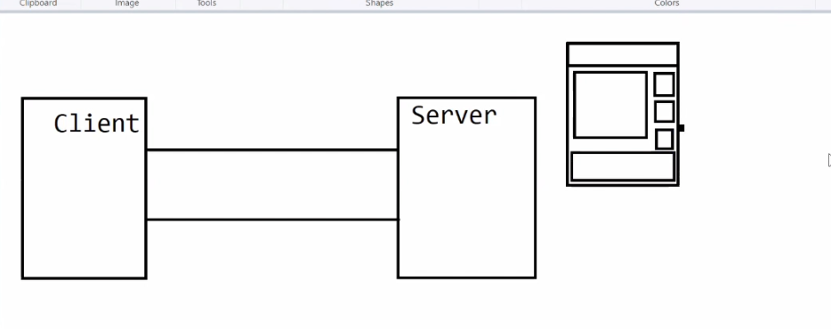
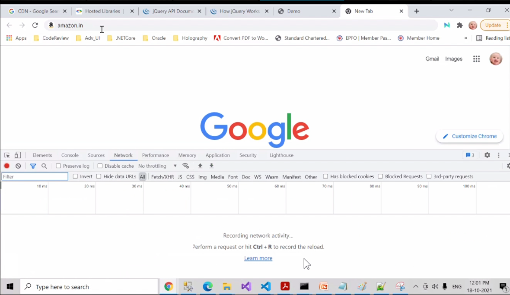
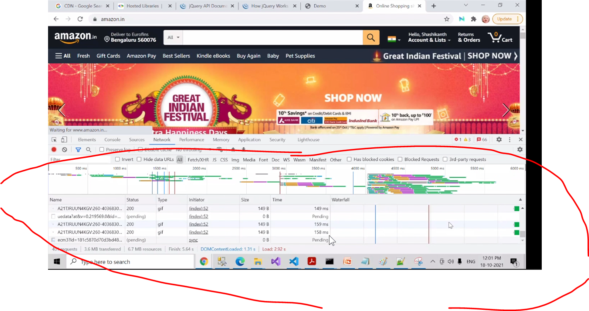
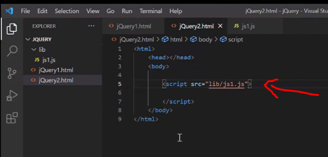
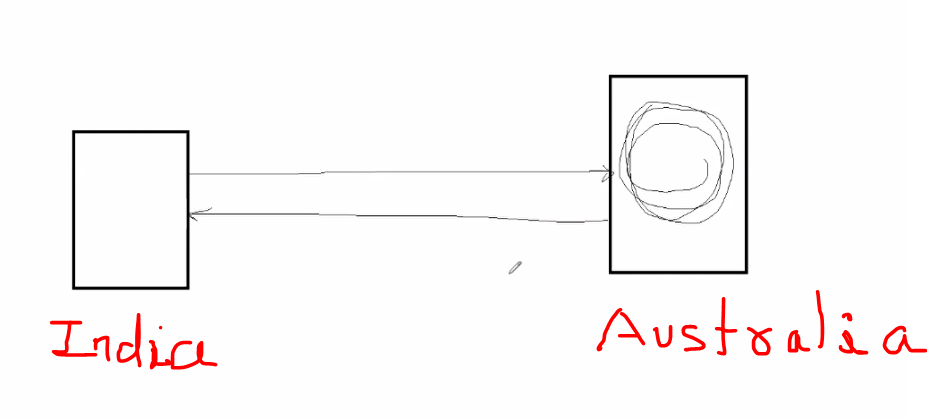
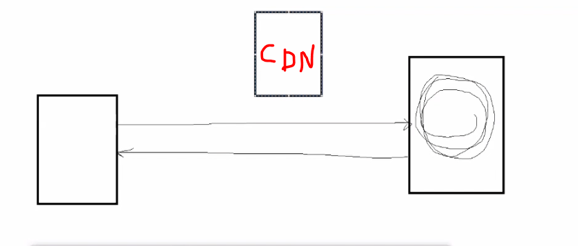
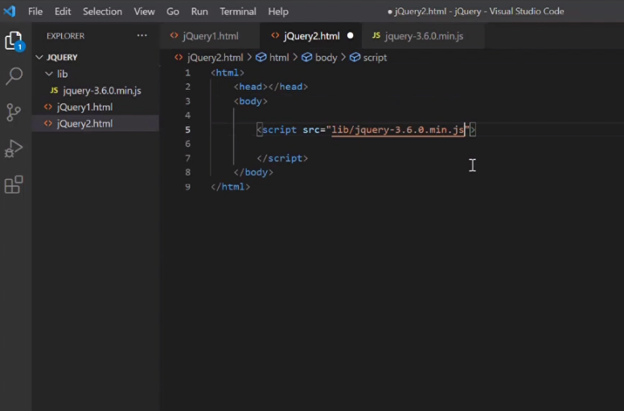
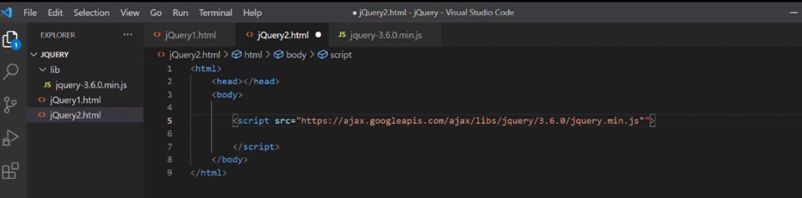
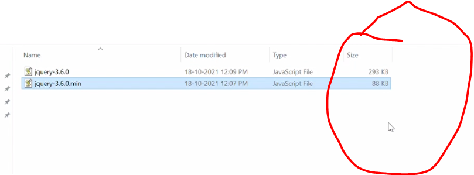

when you go here click hereit says how it works
can you see download here click here it gives you 2 options
1. you can download this entier jquery plugin to your local and then embedd that in your file and then work
2. you can always use cdn for it click here this is the cdn link----script src="https://ajax.googleapis.com/ajax/libs/jquery/3.6.0/jquery.min.js">/script
what is CDN?
CDN stands for content delivery network
all of know about request and response correct
request is send from the client to the server and server will send response back to the client
what server will send as a response
suppose i am saying pls go to www.amazon.com/index.html -------so i am requesting to this index page so when we snd request to this particular page ,so what my server does is it will take this particular page and all the VAO's value added objects associated to it all the files associated to it, it will send all of them together
when i go to amazon.in and go to network and observe
i've request for amazon.in but look at how much content the serve is sending , it is sending all this gif ,js files, xhr-xml http request, .jpg.........
so it will send all this information back to the client, so while doing so if i have written a script code here ,may be i have written a external javascript, may be you have written 10000 or 20000 lines of code and you have add that script here
and when the request is came to the jquery2.html when it is send then the js file also be sent from server to the client
remember all of this are comming from the same server , from the same location and that may create lot of traffic
so thats a reason we'll have this content delivery network, imagine my request is comming from india and my server is present in austraila, my application is deployed in australian server
when the request is comming from indian server to australian server and the australian server will send this files back to the india it will take lot of time
so instead of me writing this if i write a cdn link
so now the request will go from the indian server to this CDN and this cdn server may be close to india , we called it content delivery meaning i am trying to access this particular information
now take a example this amazon had a particular big billion day where i have ordered for a particular phone now the manufacturar of that phoe is in mumbai now when i'm sending a particular request instead of it going to mumbai and getting that particular product may be like mumbai guy, if he had godown in indore it can get it from indore na it will be faster
the cdns are like this ,they are like a godown which is close to the particular place from where we are sending the request
https://ajax.googleapis.com/ajax/libs/jquery/3.6.0/jquery.min.js
it is going to googleapi and from there it is downloading that particular file meaning it will not go to my place and it will not get the content from my server rather it will go call the google api now google api may have a particular server in mumbai , so any request which ask for this jquery file so instead of going till australian server to get the particular content it will get it from mumbai so it will be faster in delivering that particular request
so thats why in PRODUCTION -------imagine that i have downloaded the lib-->jquery-3.6.0.min.js
now if i want to use the jquery what i have to do, we will just specify jquery file path name
this is in the developnment machine but before pushing it to the production we will replace this line of code with the CDN link
Now why are we doing this -----because this will take less time to load that particular file
min.js is for production it is minified version
where as .js is the normal file
you can also compress and make minified version of your .js file , for this you have plenty of online tools
minified version is not only to remove space and comments but it will replace variables functions so it does lot of magical things for you whenever you are going with minified version
see the space difference between normal file vs minified version
if i go with cdn link in developnment version, so every time when i load the file it goes to this link and downloads that particular file and that may take lot of time in developnment
thats why for developnment we use saved js lib